1. 촬영이 필요한 이유
사진은 견적서나 메모를 대체하지 않습니다. 보험 청구, 작업 확인, 분실물 관리에서 남는 유일한 현장 증빙입니다.
- 보험 청구: 충격 범위, 부품·패널 탈착 범위, 추가 발견, 교환 부품, 장착 완료를 사진으로 입증합니다.
- 작업 확인: 견적에 포함한 작업의 수행 여부, 누락·과잉 여부를 남깁니다.
- 분실물 관리: 실내·트렁크·프렁크·도어 포켓의 고객 소지품 유무를 입고 시점에 기록합니다.
실무 원칙
조명과 초점을 확보한 뒤, 전체와 클로즈를 함께 남깁니다. 탈착한 부품·패널은 한 장에 들어오게 촬영합니다. 추가 발견은 표시한 뒤 즉시 촬영해 주십시오.
2. 미촬영 시 발생하는 문제
필수 · 미촬영 시 유의
정확한 견적을 낼 수 없으면 작업 시간이 인정되지 않고, 개인 FRT가 차감됩니다. 작업 부위 인접 오염이나 추가 손상을 촬영하지 않으면, 입고 파손과 작업 중 손상의 책임이 구분되지 않습니다. 고객 클레임이 발생해도 반박 자료가 없습니다.
- 견적 근거가 없으면 보험 인정 범위가 축소되고, 누락된 공임은 개인 FRT에서 차감됩니다.
- 인접 패널 오염·스크래치를 촬영하지 않으면, 출고 후 고객 주장과 작업 중 손상을 구분하기 어렵습니다.
- 탈착 후 확인되는 은폐 손상을 촬영하지 않으면, 추가 견적 승인이 지연되거나 거절될 수 있습니다.
- 소지품을 촬영하지 않으면 분실 클레임에서 센터가 방어할 자료가 없습니다.
3. 필수 촬영
탈·장착 범위 안의 차량 내부 전체와 고객 개인 소지품, 작업 부위의 충격·탈착·장착, 견적 밖 추가 범위, 교환 부품을 빠짐없이 남겨 주십시오.
내부 전체실내·트렁크·프렁크
개인 소지품없어도 빈 상태를 촬영
충격 부위전체 + 표시 클로즈
탈착 전체탈착한 부품·패널이 한 장에
추가 범위발견 즉시, 표시 후
교환 부품신품 펼침 + 도장 상태
장착 완료정면·3/4·갭
4. 촬영 순서
입고 외관
→
실내·소지품
→
충격 부위
→
탈착 전체
→
추가 범위
→
교환 부품
→
장착 완료
→
출고 확인
순서를 건너뛰면 시점 증빙이 성립하지 않습니다. 탈착 전 촬영 항목은 탈착 후에 촬영하지 마십시오.
5. 내부 확인 · 개인 소지품
탈·장착 범위와 인접한 실내를 먼저 촬영합니다. 소지품이 없어도 빈 트렁크·빈 프렁크를 촬영해야 “입고 때 없었다”는 증빙이 됩니다.
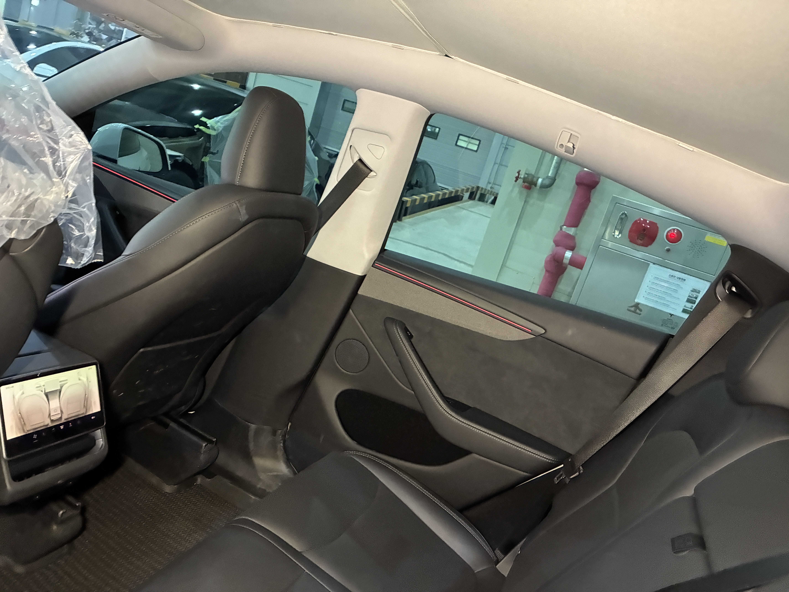
실내 전체
좌석·도어 트림·콘솔이 한 장에 들어오게 촬영합니다. 탈·장착 범위와 인접한 실내를 빠뜨리지 않습니다.
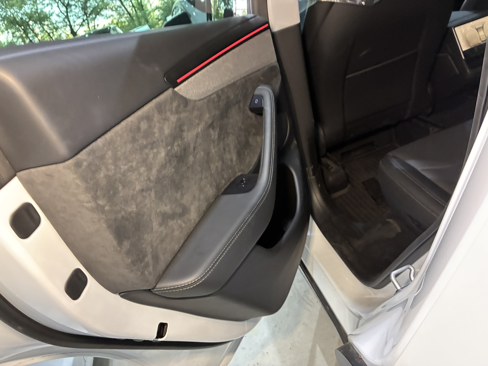
도어 트림·포켓
조수석·해당 도어 트림을 열어 촬영합니다. 오염·스크래치가 있으면 클로즈를 추가합니다.
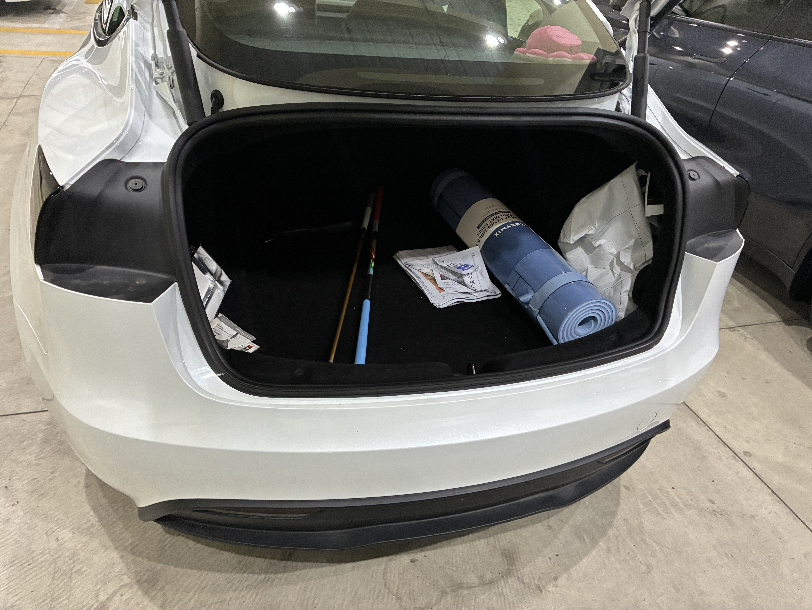
트렁크 소지품
매트·장대·쇼핑백처럼 트렁크 물건이 식별되게 촬영합니다. 비어 있으면 빈 상태 그대로 촬영합니다. 교육용 예시이며, 이 가이드의 전면 탈·장착 작업과 다른 차량입니다.
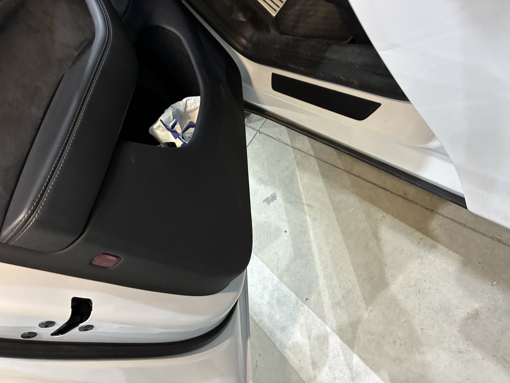
개인 소지품 예시
도어 포켓 비닐봉지처럼 작은 물건도 촬영합니다.
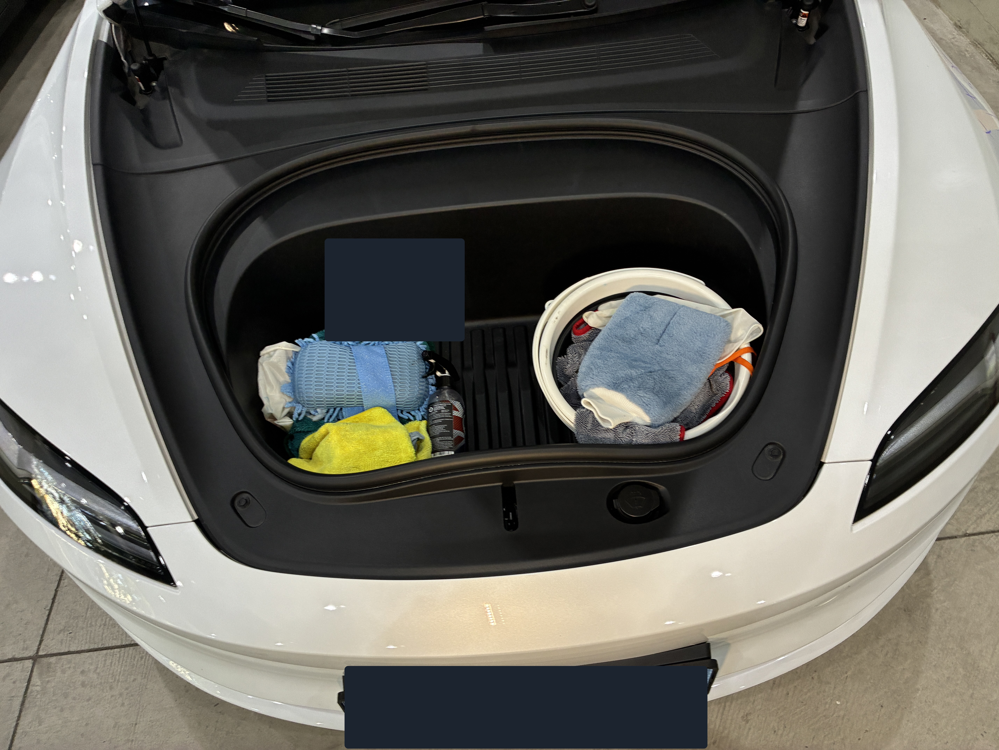
프렁크 소지품
트레이를 열고 수건·물건이 식별되게 촬영합니다. 비어 있으면 빈 상태 그대로 촬영합니다. 교육용 예시이며, 이 가이드의 전면 탈·장착 작업과 다른 차량입니다.
촬영 기준
도어를 열고 트림 전체가 보이게 촬영합니다. 트렁크·프렁크는 비어 있어도 촬영합니다. 작은 소지품은 포켓 안에서 식별되게 남겨 주십시오.
주의
닫힌 도어만 촬영하지 마십시오. 트렁크가 비어 있다는 이유로 생략하거나, 프렁크를 열지 않거나, 소지품이 작다고 생략하지 마십시오.
6. 충격 부위
작업 부위에서 가장 먼저 남는 증빙입니다. 전체 촬영으로 위치를 특정하고, 주황·빨강 표시가 읽히도록 클로즈를 추가합니다.
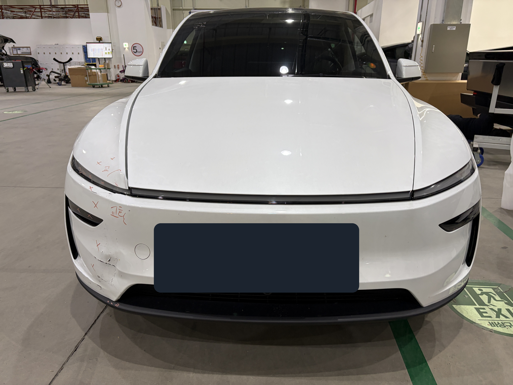
전면 전체
차량 정면에서 충격 위치와 주변 패널이 함께 보이게 촬영합니다.
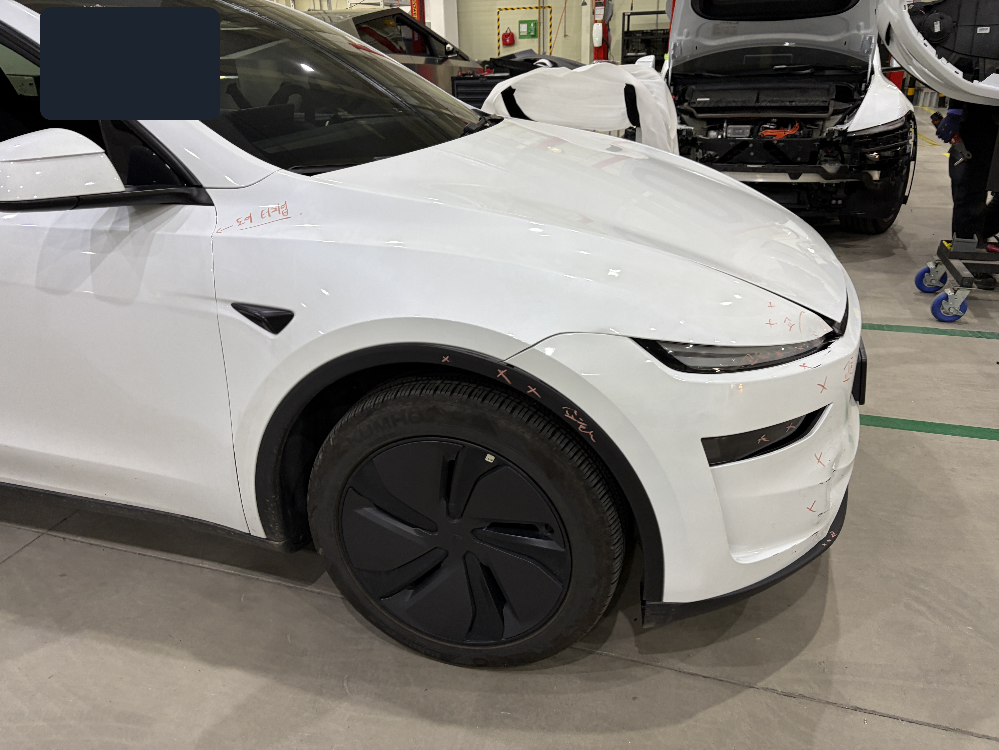
측면 전체
펜더·도어·휠하우스까지 한 장에 담습니다. 배경의 다른 차량 탈착 상태는 이 작업이 아닙니다.
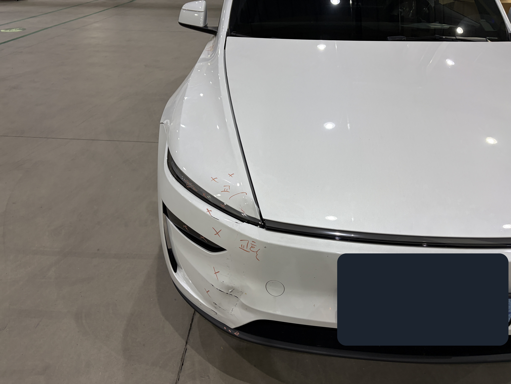
전면 3/4
범퍼·헤드램프·펜더 파손과 표시가 한눈에 들어오게 촬영합니다.
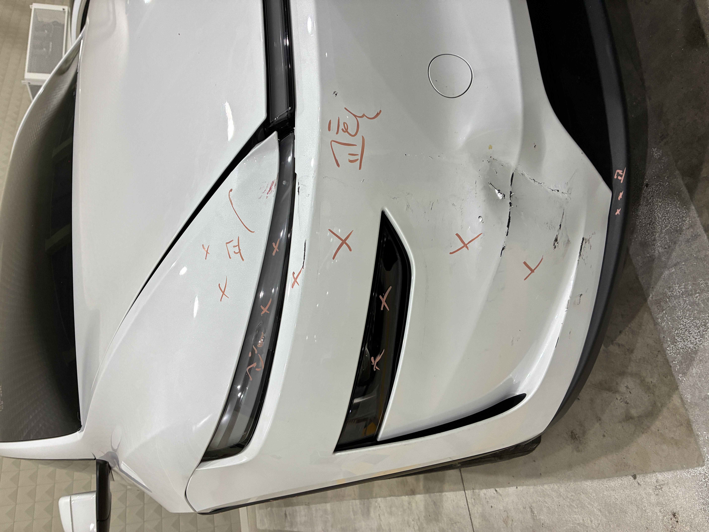
전면 클로즈
균열·함몰·교환 표시가 읽히게 촬영합니다. 원거리 촬영은 보험에서 범위를 확인하기 어렵습니다.
촬영 기준
표시(X, 교환, 터치업)가 보이게 촬영합니다. 전체 한 장과 파손 클로즈를 함께 남깁니다. 인접 패널이 프레임에 들어오도록 촬영해 주십시오.
주의
초점이 맞지 않거나, 원거리에서 표시가 읽히지 않게 촬영하지 마십시오. 파손만 잘라 촬영하여 패널 위치를 알 수 없게 하거나, 그림자만 남기지 마십시오.
7. 부품·패널 탈착
탈착한 부품·패널과 노출된 구조가 한 장에 들어와야 작업 범위를 입증할 수 있습니다. 아래 샘플은 동일 탈착 상태의 와이드와 클로즈입니다. 이 작업에서는 펜더가 아직 장착된 상태이므로, 펜더를 완전히 탈착한 경우에는 휠·캘리퍼·마운트가 한 장에 들어오게 촬영합니다.
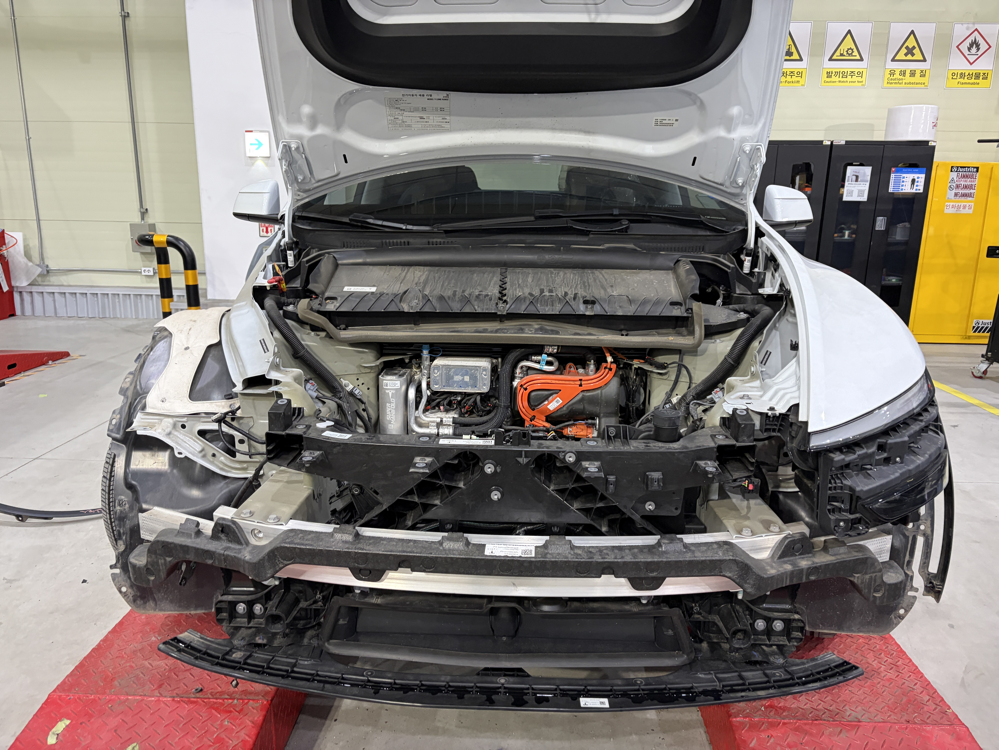
프론트 탈착 와이드
후드 개방, 범퍼 탈착 후 전면 구조가 한 장에 들어오게 촬영합니다.
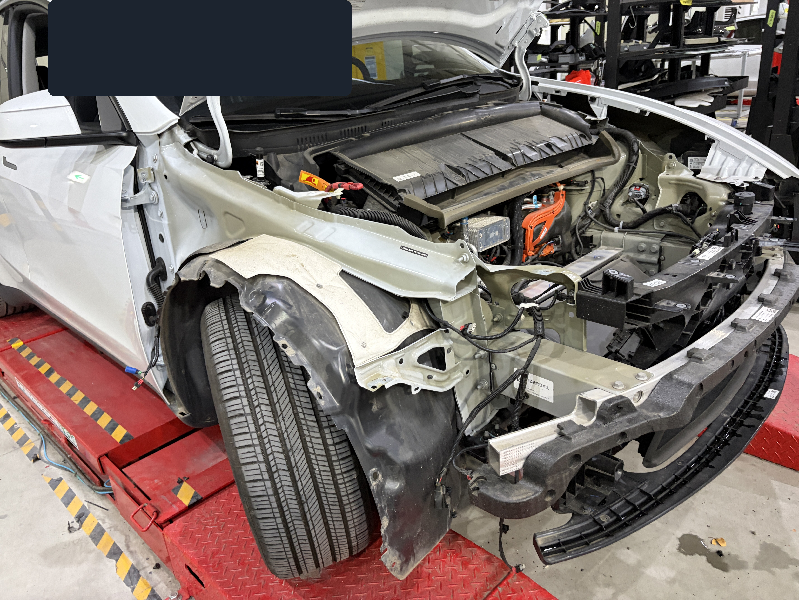
탈착 좌측 3/4
크래시 구조와 휠하우스가 보이게 촬영합니다. 펜더를 완전히 탈착한 경우에는 캘리퍼·마운트까지 담습니다.
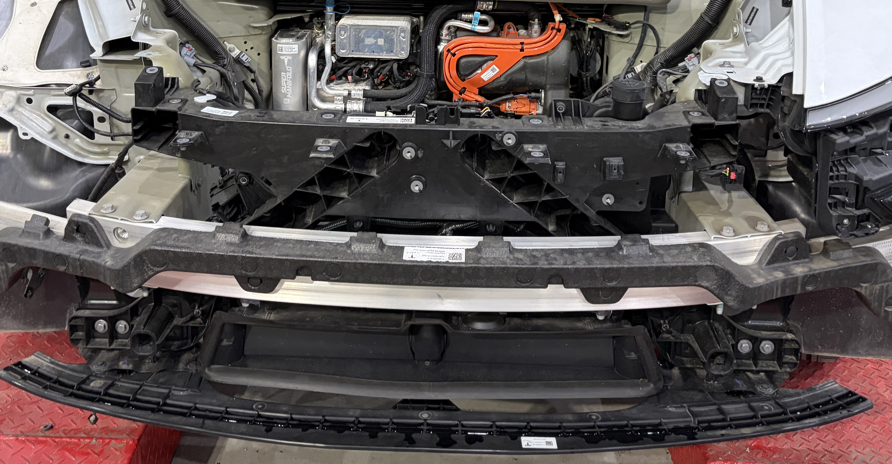
에이프론·크래시 탈착 클로즈
탈착한 전면 구조가 식별되게 촬영합니다. 추가 범위 갤러리의 은폐 구조 장과 목적이 다릅니다.
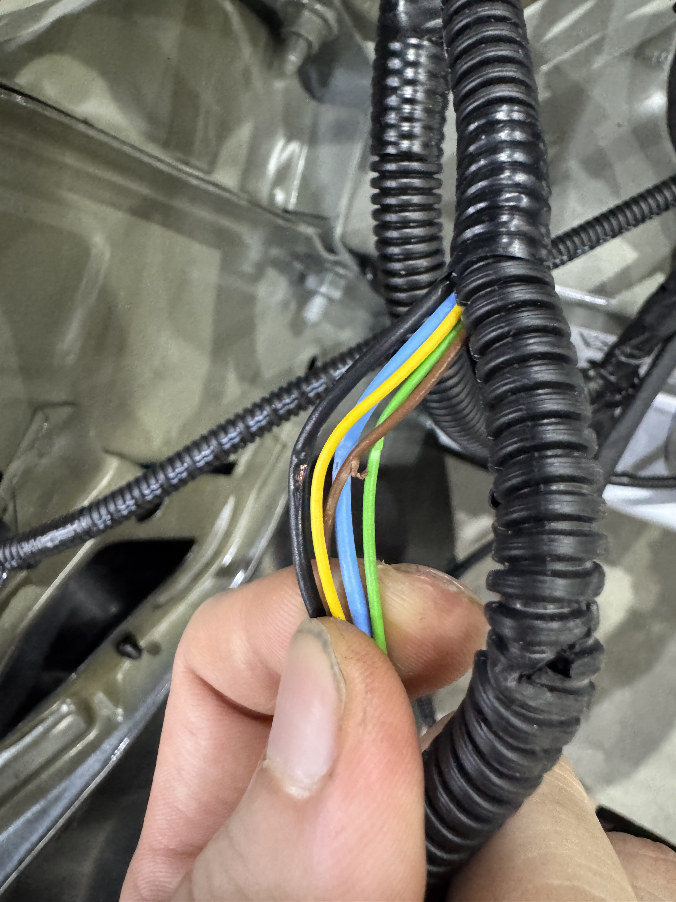
하네스 손상 클로즈
피복이 벗겨진 배선을 손에 들고 끝단이 보이게 촬영합니다. 교육용 예시이며, 이 가이드의 전면 탈·장착 작업과 다른 차량입니다.
탈착 촬영 보충
프렁크 트레이와 빔도 탈착하면 펼쳐서 촬영합니다. 커넥터는 손에 들고 끝단이 보이게 남겨 주십시오. 배경의 다른 차량 탈착 사진은 이 작업의 탈착으로 사용하지 마십시오.
촬영 기준
후드 개방 와이드를 먼저 촬영하고, 구조·배선·휠하우스는 클로즈로 남깁니다. 탈착한 부품·패널이 바닥에 흩어져 있으면 한자리에 모아 촬영해 주십시오.
주의
범퍼만 탈착하고 구조가 보이지 않게 촬영하지 마십시오. 펜더를 탈착했는데 캘리퍼가 프레임 밖에 있거나, 커넥터 번호만 촬영하고 위치가 확인되지 않는 상태는 남기지 마십시오.
9. 교환 부품
신품은 박스 단위로 펼쳐 촬영하고, 프라이머·도장 상태도 남깁니다. 작업 카드·노란색 테이프의 차량 번호는 교육용 공유본에서만 가립니다. 실제 작업 사진에는 차량을 식별할 수 있게 촬영합니다.
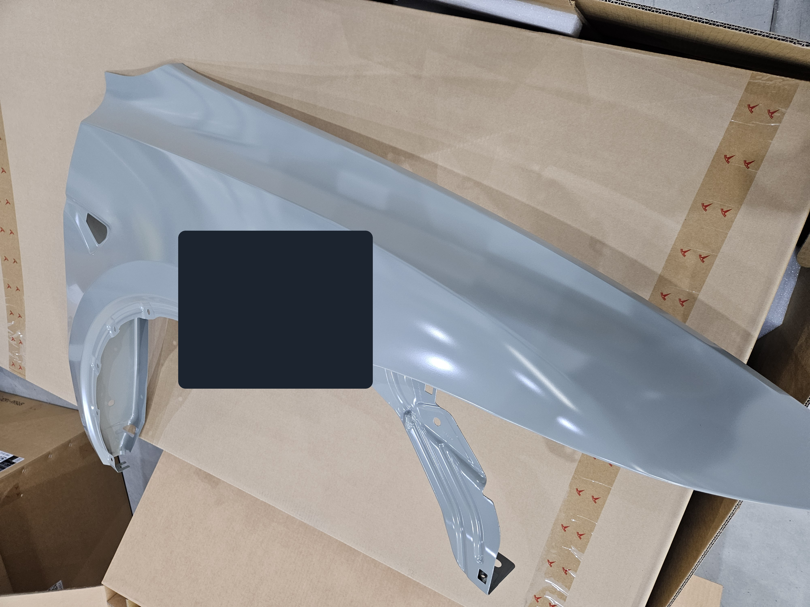
신품 펜더
부품 전체가 보이게 펼쳐 촬영합니다.
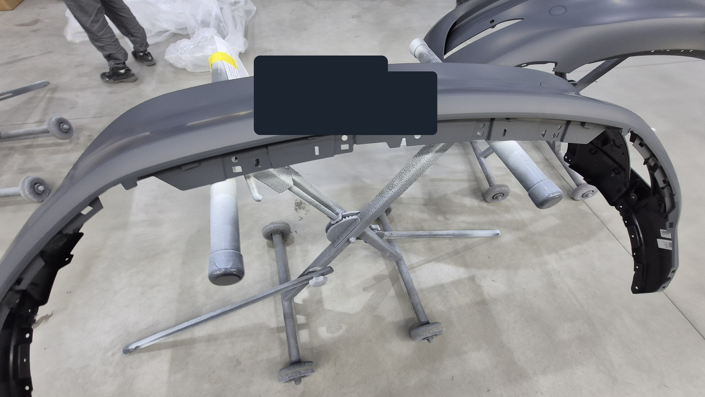
프라이머 범퍼
도장 전 준비 상태입니다. 스탠드에 올린 부품이 식별되게 촬영합니다.
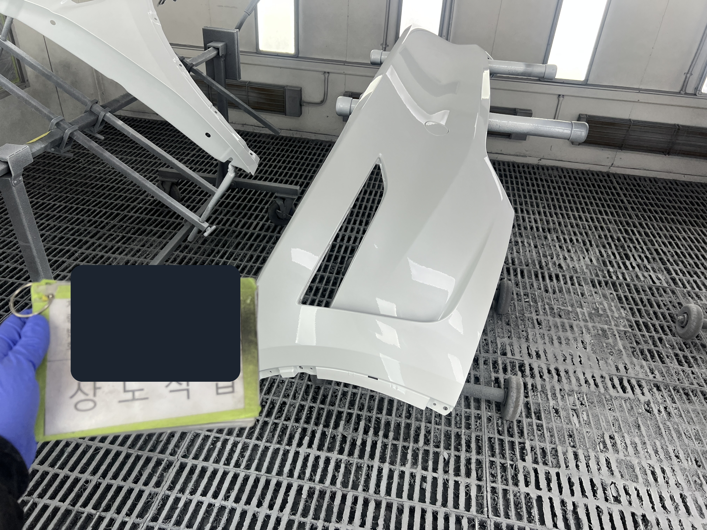
도장 부스 펜더
상도 작업 중입니다. 부스와 부품이 함께 보이게 촬영합니다.
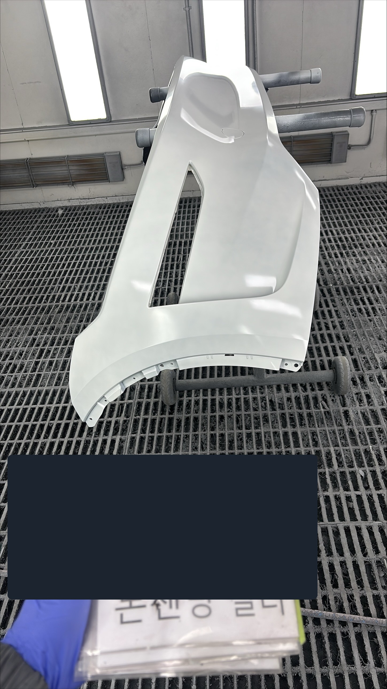
도장 상태 기록
논샌딩 필러 등 공정이 읽히게 촬영합니다.
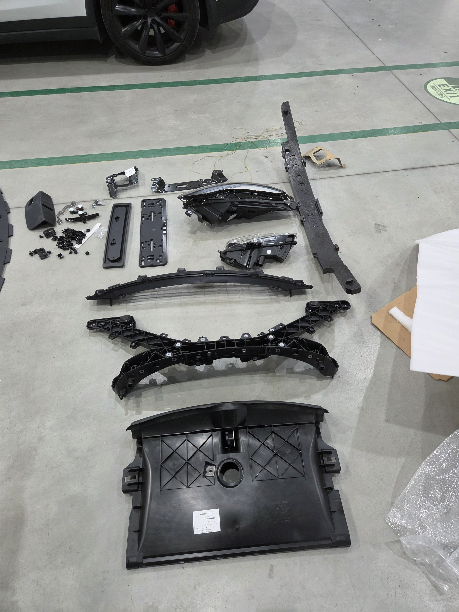
신품 레이아웃
빔·크래시 구조·헤드램프·브라켓·체결류·프렁크 트레이를 한자리에 펼쳐 촬영합니다. 박스·랩핑 부품도 동일하게 펼칩니다. 교육용 예시이며, 이 가이드의 전면 탈·장착 작업과 다른 차량입니다.
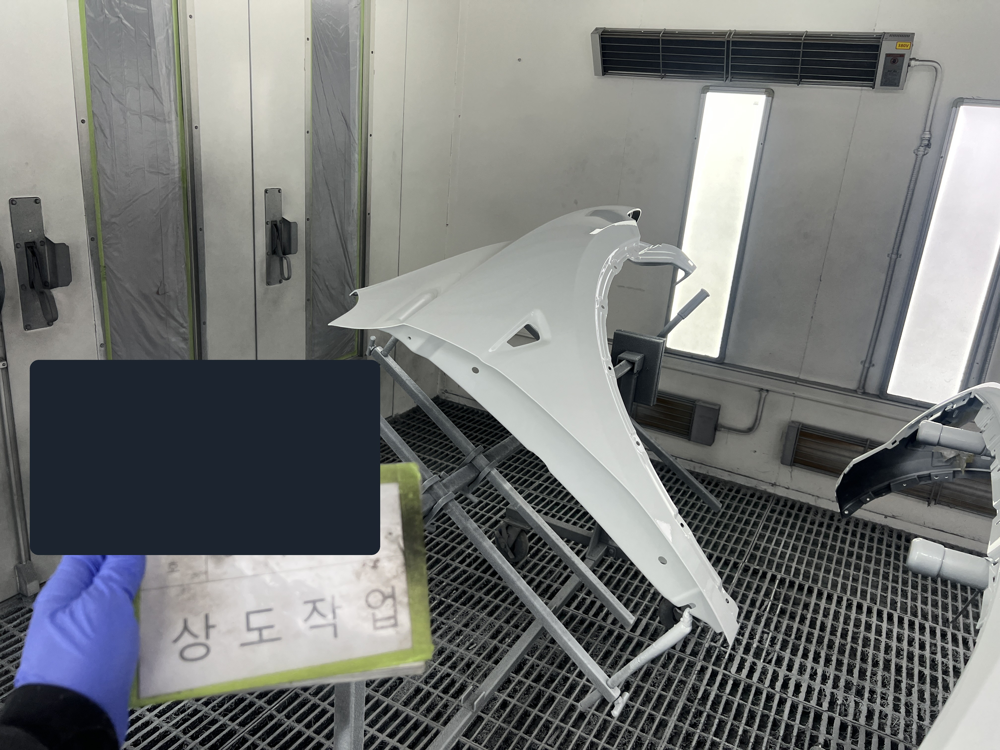
도장 부스 보조 앵글
같은 공정도 다른 각도 한 장을 더 남깁니다.
촬영 기준
신품은 포장에서 꺼내 펼칩니다. 프라이머·상도가 구분되게 촬영합니다. 여러 부품이면 한 장 레이아웃과 개별 클로즈를 남겨 주십시오.
주의
박스만 촬영하고 내용물을 남기지 마십시오. 조명이 부족해 색이 보이지 않거나, 다른 작업 부품이 섞여 들어오지 않도록 해 주십시오.
10. 부품·패널 장착
부품·패널 장착이 완료되었다는 증빙입니다. 아래는 이 작업의 실제 장착 완료 사진입니다. 정면, 3/4 정렬, 패널 갭을 남깁니다.
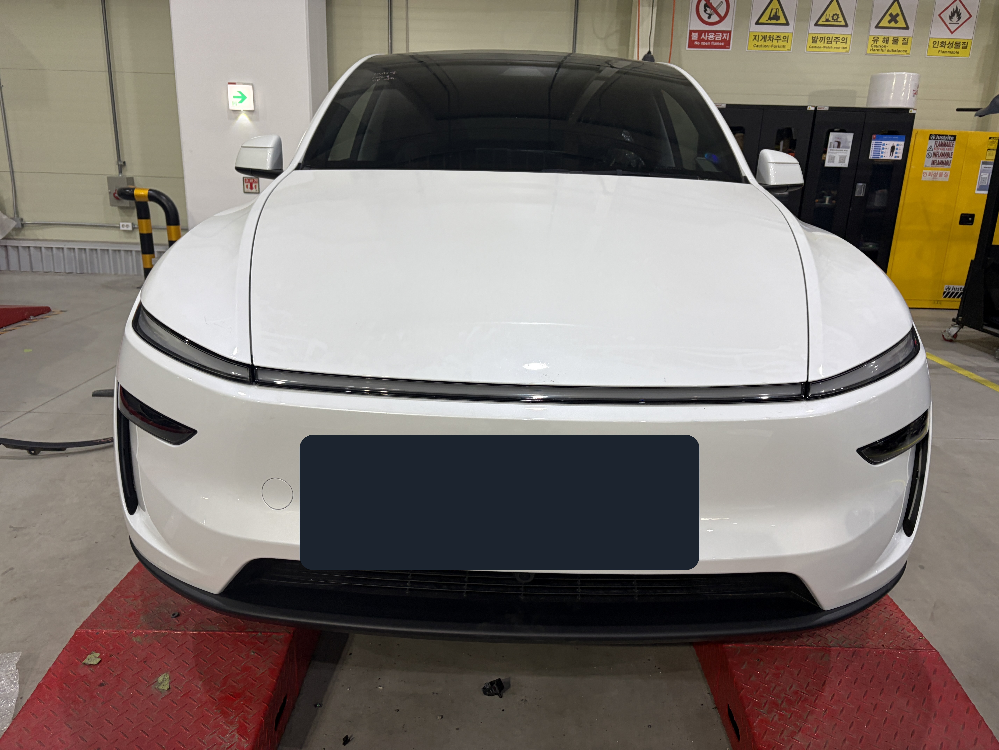
장착 정면
범퍼·램프·후드가 제자리에 장착되었음을 정면에서 확인합니다.
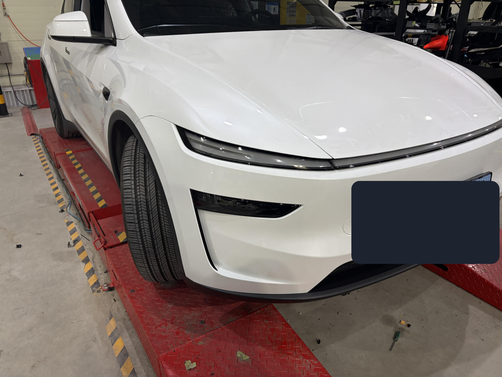
3/4 정렬
펜더·범퍼·램프 라인이 맞게 장착되었는지 확인합니다.
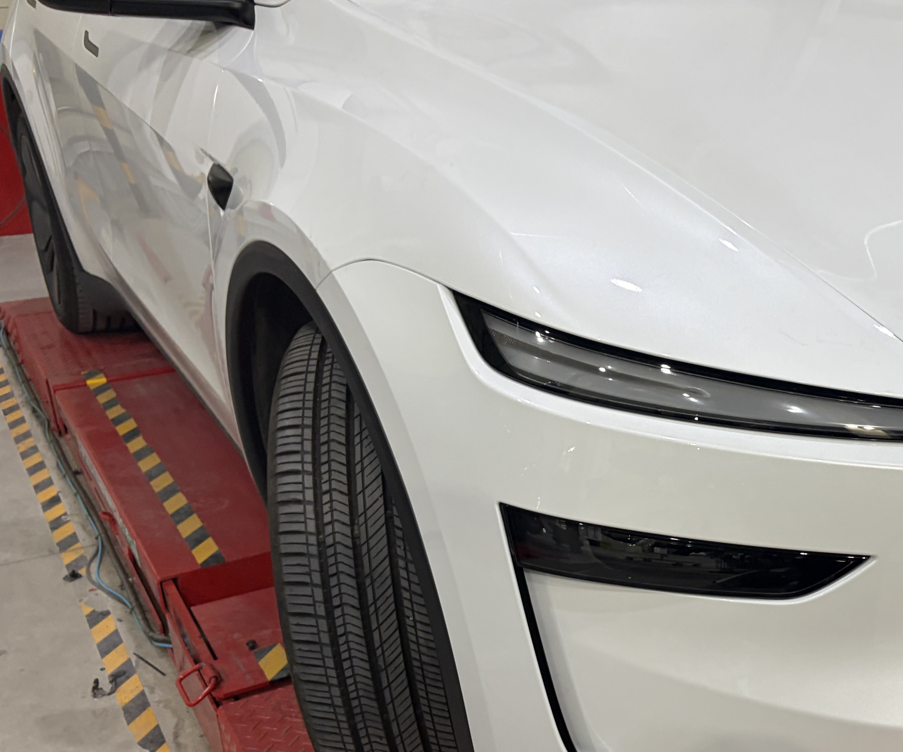
패널 갭 클로즈
펜더–램프–범퍼 갭이 읽히게 촬영합니다. 출고 품질 확인용입니다.
촬영 기준
리프트 위라도 차체가 수평에 가깝게 촬영합니다. 갭 클로즈는 패널 이음에 초점을 맞춥니다. 입고 충격 사진과 같은 각도이면 비교하기 쉽습니다.
주의
보호 필름을 제거하지 않고 촬영하지 마십시오. 한쪽만 촬영하여 반대쪽 갭이 없거나, 저조도로 색이 뭉개지지 않도록 해 주십시오.
11. 촬영 참고 사항
아래는 단계별 체크 확인용이 아니라, 촬영 전·중·후에 참고할 사항입니다.
촬영 전
- 차량·RO를 확인합니다.
- 렌즈와 조명을 확인합니다.
- 입고 외관 각도를 정합니다.
- 실내·트렁크·프렁크를 열 준비를 합니다.
촬영 중
- 내부 전체와 소지품을 촬영합니다. 없어도 빈 상태로 촬영합니다.
- 충격 전체와 표시 클로즈를 촬영합니다.
- 탈착 와이드와 구조·배선 클로즈를 촬영합니다.
- 추가 발견은 표시한 뒤 즉시 촬영합니다.
- 교환 부품 펼침·도장 상태를 촬영합니다.
- 장착 정면·3/4·갭을 촬영합니다.
촬영 후
- 초점 불량·원거리 장은 다시 촬영합니다.
- 슈퍼바이저에게 추가 범위 사진을 전달합니다.
- 견적·보험 요청에 필요한 장이 빠지지 않게 합니다.
- 출고 전 소지품·외관을 한 번 더 확인합니다.
센터 업로드 경로(Service Plus 등)가 정해져 있으면, 촬영 후 해당 경로로 올립니다.
12. 슈퍼바이저 전달 포인트
- 사진은 보험·FRT·고객 클레임의 증빙입니다. 촬영하지 않으면 견적이 진행되지 않고 개인 FRT가 차감됩니다.
- 내부와 소지품은 입고 직후 촬영합니다. 없어도 빈 트렁크·프렁크를 촬영해 주십시오.
- 탈착은 탈착한 부품·패널이 한 장에 들어오게 촬영합니다.
- 추가 범위는 표시한 뒤 그 자리에서 촬영합니다. 장착 후 사진은 추가 근거가 되기 어렵습니다.
- 장착 완료는 입고와 같은 각도로 정면·3/4·갭을 남겨 비교할 수 있게 해 주십시오.